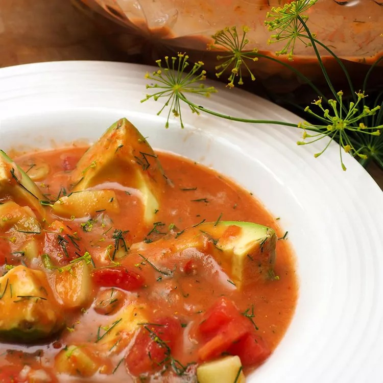

Dill Gazpacho

Highlight summer's best produce with this herbaceous gazpacho. Make it a full meal by serving with a side of crusty bread for cleaning out the bowl.
A fresh and mild gazpacho that takes advantage of all that summer has to offer. Super easy too. Garnish with a sprig of fresh dill and serve chilled.
Ingredients
- 6 medium ripe tomatoes, finely chopped
- 2 cucumbers, peeled and finely chopped
- 1 onion, finely chopped
- 1 green bell pepper, finely chopped
- jalapeno pepper, seeded and minced
- 1 large lemon, juiced
- 1 tablespoon balsamic vinegar
- 2 teaspoons olive oil
- 1 teaspoon kosher salt
- ½ teaspoon ground black pepper
- ¼ cup chopped fresh dill
Steps
- In a large bowl, stir together tomatoes, cucumber, onion, bell pepper, and jalapeno pepper. Season with lemon juice, balsamic vinegar, olive oil, salt and pepper.
- In a blender or food processor, puree half of the mixture until smooth. Return to bowl, stir in dill and mix well. Cover and chill for at least one hour before serving.